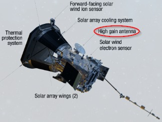

There are 2-meter-long antennas that are made of a niobium alloy, which can withstand extreme temperatures. There are others like the sunlit antennas that measure the properties of the fast and slow solar wind — the flow of solar particles constantly streaming out from the Sun. Also, there is an antenna that sticks out perpendicular to the others in the shade of the heat shield, helping make a three-dimensional picture of the electric field at higher frequencies.
